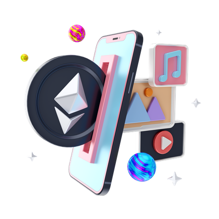

CoinsQ Non
Fungible Token (NFT)
Non-Fungible Tokens (NFTs) bring several benefits to various
stakeholders within the blockchain ecosystem. Here are some of the
key advantages of NFTs:
Unique Ownership: NFTs represent unique digital assets, which
means each token is distinct and cannot be replicated. This
uniqueness allows for verifiable ownership and provenance of
digital assets, such as artwork, collectibles, virtual real estate, and
more. NFTs enable creators and owners to establish and prove
their ownership rights in a transparent and tamper-proof
manner.
Digital Scarcity: NFTs introduce scarcity to the digital realm. Unlike
fungible cryptocurrencies like Bitcoin or Ether, which are
interchangeable, each NFT has a distinct value and scarcity. This
scarcity makes NFTs desirable for collectors and enthusiasts, as
they can own and trade exclusive digital assets that have limited
supply.
Creative and Monetization Opportunities: NFTs unlock new
creative and monetization opportunities for artists, content
creators, and developers. Artists can tokenize and sell their digital
artworks directly to collectors, bypassing traditional
intermediaries. Content creators can offer unique digital
experiences or limited-edition content to their audience,
providing new revenue streams. NFTs also enable developers to
create virtual goods, items, or experiences within blockchainbased games, allowing players to truly own and trade their ingame assets.
Royalties and Residual Income: NFTs can incorporate smart
contracts that automate royalty payments to original creators
whenever their tokens are resold on secondary markets. This
means artists and creators can receive a percentage of the sales
price each time their NFT is sold, even after the initial sale. This provides an ongoing revenue stream and the potential
for increased value over time.
Interoperability and Composability: NFTs can be easily integrated
and interoperable across different blockchain platforms and
decentralized applications (DApps). This interoperability allows
NFTs to be used and traded in various virtual worlds, gaming
platforms, marketplaces, and other applications, expanding the
potential user base and creating new opportunities for value
exchange and collaboration.
Authenticity and Provenance: NFTs provide a transparent and
immutable record of an asset's ownership history and
provenance. This record ensures that the asset is authentic and
not counterfeit, which is particularly important for high-value
items like artwork or rare collectibles. The ability to trace an
asset's origin and ownership adds value and trust to the NFT
ecosystem.
Fractional Ownership and Accessible Investment: NFTs can be
divided into smaller fractions, allowing for fractional ownership.
This fractionalization enables investors with limited budgets to
own a fraction of high-value assets that would otherwise be
inaccessible. Fractional ownership democratizes investment
opportunities and allows for broader participation in asset
ownership and potential financial gains.
Enhanced User Engagement and Community Building: NFTs
provide a way for creators and projects to engage with their
audience and build a community around their digital assets.
Collectors and enthusiasts can interact with artists, participate in
limited releases or events, and be part of a passionate
community that shares common interests. This engagement can
create a sense of belonging, loyalty, and social interaction within
the NFT ecosystem